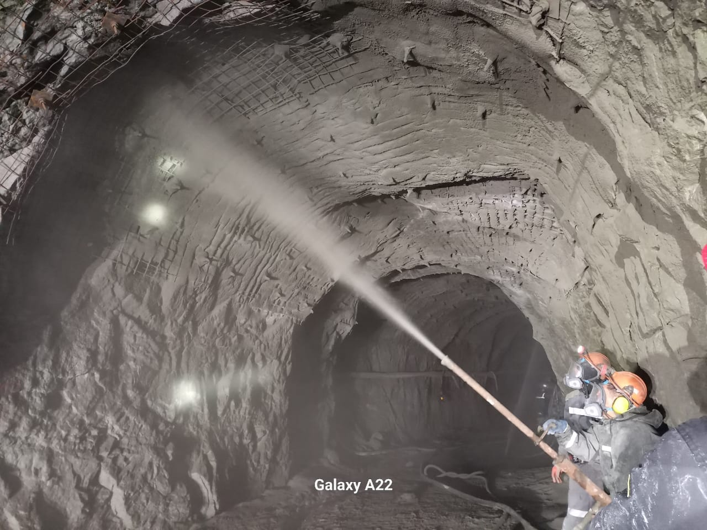
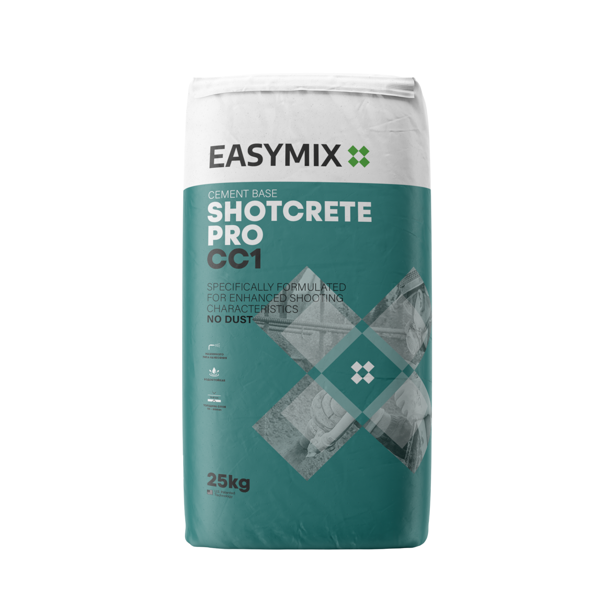
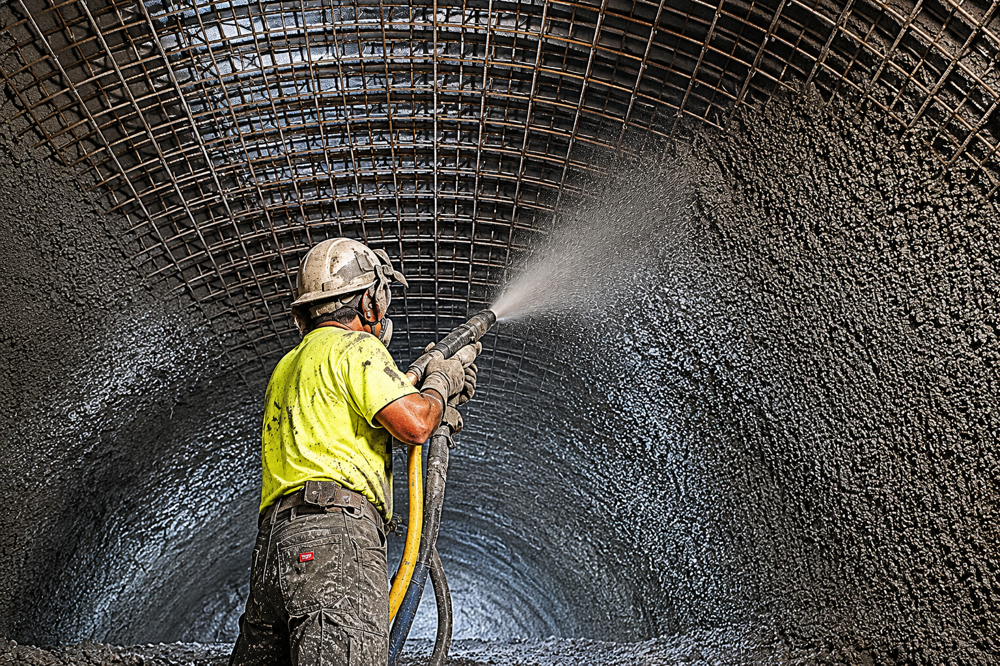

Подземное и горное строительство
Шахтные выработки, штреки, тоннели, технологические камеры. Укрепление породы, первичная и вторичная крепь, защитный слой по армирующей сетке и анкерам.
Сухой торкрет-бетон для механизированного набрызга на вертикальные, наклонные, сводчатые и потолочные поверхности

EasyMix SHOTCRETE PRO CC1 — готовая к применению сухая смесь на цементной основе для нанесения торкрет-способом. После затворения водой подаётся через торкрет-оборудование и наносится плотным слоем на вертикальные, наклонные, сводчатые и потолочные поверхности.
Смесь формирует прочный слой бетона с высокой адгезией к основанию, сниженным отскоком, стабильной удобоукладываемостью и равномерным набором ранней прочности. Предназначена для работы в условиях повышенной нагрузки: шахты, тоннели, подземные выработки, промышленные объекты.

Шахтные выработки, штреки, тоннели, технологические камеры. Укрепление породы, первичная и вторичная крепь, защитный слой по армирующей сетке и анкерам.

Заводские здания и цеха, технические помещения, подпорные стены, фундаменты, технологические каналы, резервуары и гидротехнические элементы.

Ремонт железобетонных конструкций, восстановление фасадных элементов, укрепление старого бетона, ремонт мостов и тоннелей, устройство защитных покрытий.
| Номер | KZ.7500669.01.01.01610 |
| Орган | ТОО «КазЮжстройсертиф», г. АлматыKZ.O.02.E0669 |
| Дата регистрации | 02.02.2026 |
| Соответствует | ТР РК 1202, ТР РК 348-НҚ ГОСТ 31357-2007, ГОСТ 30108-94 |
| Схема | 3 (с инспекционным контролем) |
| Заявитель | ТОО «ЭкоМикс» · БИН 171140033124 |
| Показатель | НД / Норма | Факт |
|---|---|---|
| Прочность на сжатие, 28 сут, МПа | ≥ 26,2 (М250) | 27,4 |
| Прочность на изгиб, 28 сут, МПа | ≥ 4,0 | 4,1 |
| Морозостойкость (ускоренный 2-й метод) | ≥ F50 | F50 |
| Потеря прочности при морозе, % | ≤ 25 | 6,2 |
| Потеря массы при морозе, % | ≤ 5 | 2,5 |
| Средняя плотность, кг/м³ | > 1400 | 1550 |
| Водоудерживающая способность, % | ≥ 95 | 96 |
| Влажность, % | ≤ 0,2 | 0,1 |
| Подвижность, Пк, см | 4–8 (Пк2) | 7 |
| Показатель | Метод | Норма | Факт |
|---|---|---|---|
| Влажность, % | ГОСТ 8735-88 | ≤ 0,2 | 0,1 |
| Подвижность, Пк, см | ГОСТ 5802-86 | 4–8 (Пк2) | 7 |
| Средняя плотность, кг/м³ | ГОСТ 5802-86 | > 1400 | 1550 |
| Водоудерживающая способность, % | ГОСТ 5802-86 | ≥ 95 | 96 |
| Прочность при изгибе, 28 сут, МПа | ГОСТ 310.4-81 | ≥ 4,0 | 4,1 |
| Прочность при сжатии, 28 сут, МПа | ГОСТ 5802-86 | ≥ 26,2 (М250) | 27,4 |
| Число циклов замораживания / оттаивания | ГОСТ 5802-86 | 8 | 8 |
| Потеря прочности, % | ≤ 25 | 6,2 | |
| Потеря массы, % | ≤ 5 | 2,5 |
| Цвет | Серый |
| Плотность приготовленного раствора, кг/л | (2,15 ± 0,15) |
| Максимальная крупность наполнителя, мм | 3,5 |
| Соотношение В/Т при смешивании | 0,11 – 0,17 |
| Расход при слое 10 мм, кг/м² | ~20,5 |
| Выход готового раствора, л / мешок 25 кг | ~13 |
| Водонепроницаемость | W12 |
| Адгезия (прочность на растяжение), МПа | ≥ 2,0 |
| Капиллярный подсос, кг/(м²·мин⁰ᐟ⁵) | ≤ 0,4 |
| Толщина слоя, мм | 10 – 60 (локально до 120) |
| Расстояние сопла до основания, м | 0,75 – 1,25 |
| Перерыв между слоями, ч | 8 – 12 |
Учитывать технологический отскок 10–20 %. Расход без учёта отскока. Для точного расчёта рекомендуется пробное нанесение на участке не менее 1 м².
Очистить от пыли, грязи, цементного молочка, слабого бетона, масла, льда. Обработать механически (пескоструй, гидроструй, насечка). Увлажнить до матово-влажного состояния, без луж и водяной плёнки.
Затворить чистой водой при В/Т = 0,11–0,17 (≈ 3,5–4,5 л на мешок 25 кг). Перемешать до однородной массы, выдержать 2–3 мин, перемешать повторно.
Сопло — под прямым углом к основанию на расстоянии 0,75–1,25 м. Наносить слоем 10–60 мм за проход. При большей толщине — послойно с перерывом 8–12 ч.
Главная угроза в подземных условиях — шахтная вентиляция: интенсивная тяга быстро иссушает поверхность до набора прочности. При скорости воздуха выше 0,5 м/с увлажнять набрызг распылением воды каждые 4–6 ч в течение 72 ч. Запрещены взрывные работы и интенсивная вибрация от проходческого оборудования ближе 10 м от свежего слоя. На наземных объектах — беречь от прямого солнца и сильного ветра, при необходимости укрывать влажной мешковиной.
Поставка SHOTCRETE PRO CC1 в мешках 25 кг. Подбор под объект, консультация по технологии нанесения.
171140033124ГОСТ 31357-2007KZ.7500669.01.01.016103824 50 9000